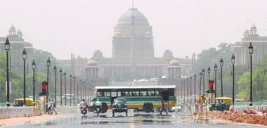
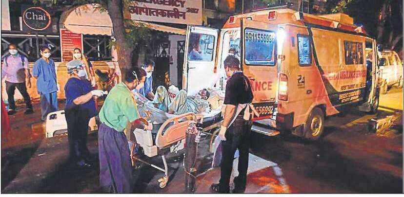

NEW DELHI: After a hot Friday,

continued to bake on Saturday — the Safdarjung weather station recorded 44.7°C, a full five degrees above normal — and scientists at the India Meteorological Department (IMD) warned that the Capital could see the heatwave continue in the first half of next week.
If anything, it will only become hotter. “Till May 27, there will be no respite. The maximum temperature can go up to 46-47 degree Celsius in the Capital because of dry, hot winds blowing. From May 28 night, a western disturbance will affect us which may cause dust storm or thunderstorms. Low level easterly winds may also bring some relief after May 28,” said Kuldeep Shrivastava, head, regional weather forecasting centre, Delhi.
Severe heatwaves are likely to impact parts of northwest, central and peninsular India in next four to five days, while many parts of northeast India will experience very heavy to extremely heavy rainfall during the same period, India Meteorological Department (IMD) said in a statement on Saturday.
Pakistan's Prime Minister Imran Khan posted on Twitter that he was "shocked and saddened" by the crash, adding that an "immediate inquiry will be instituted". Airworthiness documents showed the plane last received a government check on November 1, 2019. PIA's chief engineer signed a separate certificate on April 28 saying all maintenance had been conducted on the plane and that "the aircraft is fully airworthy and meets all the safety" standards. Ownership records for the Airbus A320 involved in the crash showed China Eastern Airlines flew the plane from 2004 until 2014. The plane then entered PIA's fleet, leased from GE Capital Aviation Services. In 2016, a PIA plane carrying 47 people, including five crew members and 42 passengers, crashed into a mountain in northern Pakistan. There were no survivors.
Firefighters |
 |
A vaccine for the SarsCov-2 virus developed by researchers at China’s CanSino Biologics was found to be safe and effective in its first test on humans, becoming the latest trial that raises hope for an early candidate that could help make people immune to the coronavirus disease (Covid-19). The result of CanSino’s Phase 1 trial, reported in The Lancet on Friday, is the first to be published in a peer-reviewed journal. The Chinese researchers reported that their experimental vaccine produced neutralising antibodies — the type of immune cells that kill infected cells — and the rapid immune responses crucial for the body to mount its varied counter-attack. The trials were carried out with 108 healthy participants from Wuhan who were never infected by the virus. The results are based on antibody and immune cell concentrations seen within 28 days of the vaccine being given to the participants in a low, medium or high dose. The ones given the high dose had the strongest immune response but also suffered from the most side-effects, such as high fever, fatigue and headache.››P5
| NEW DELHI: A Delhi business executive who has a business meeting in Bengaluru can now fly to the city — airline services are being restored from Monday — but faces the prospect of a seven-day quarantine at an institution and another seven days out of it. Karnataka, Punjab, and Kerala have decided on a 14-day quarantine for domestic passengers, with variations. Karnataka’s is restricted to travellers from areas with a high incidence; | Punjab and Kerala have mandated a 14-day quarantine for anyone entering the state. There are reports that Andhra Pradesh, Chhattisgarh and Telangana are also considering the quarantines. Aviation minister Hardeep Puri on Saturday emphasised that those taking domestic flights need not (and should not) be quarantined. But the states do not seem to be in agreement. |
No new covid cases in China |
China recorded no new confirmed cases of Covid-19 on Friday,smaking it the first time that the country has seen no daily rise in infections since the pandemic began at the end of last year. ››P9 |
|---|